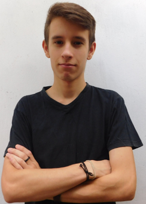

Erick "Newly" Scherlowski
Ex-pro Overwatch Contenders Player

Erick "Newly" Scherlowski (nacido Marzo 19, 1999) es un ex-jugador Uruguayo para Nocturns Gaming.
Experiencia
Open Division 2017 Season 1 (7th)
Open Division 2017 Season 2 (13th)
Open Division 2017 Season 3 (5th)
1on1 Duelo Misterioso #2 (2nd)
1on1 Duelo Misterioso #7 (3th)
FiA 1v1 Overwatch Open (5th)
ZOTAC CUP - Overwatch (SA) - Qualifier (3th)
Open Division 2018 (4th)
Overwatch Contenders 2018 S1 (4th)
Open Division 2019 Season 1 (1st)
Open Division 2019 Season 2 (5th)
ZOTAC CUP Overwatch Community Tournament (1st)